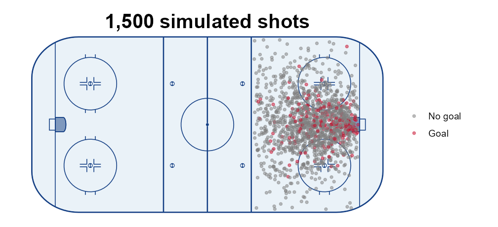
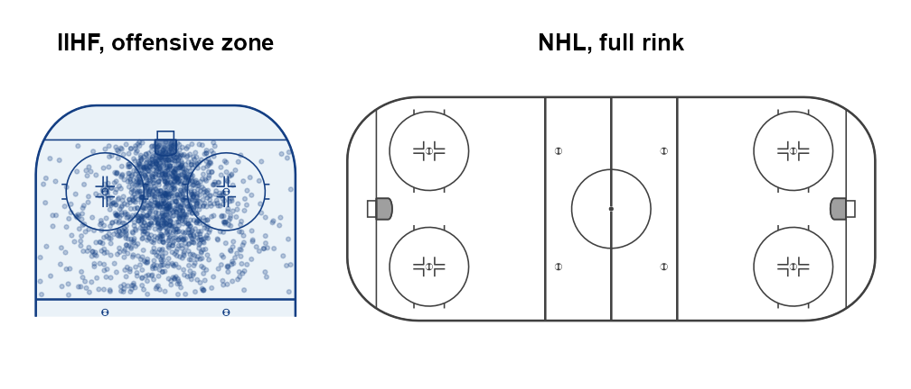
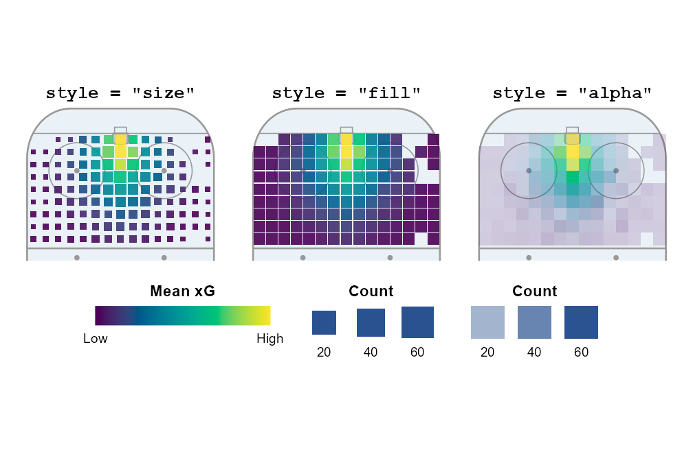
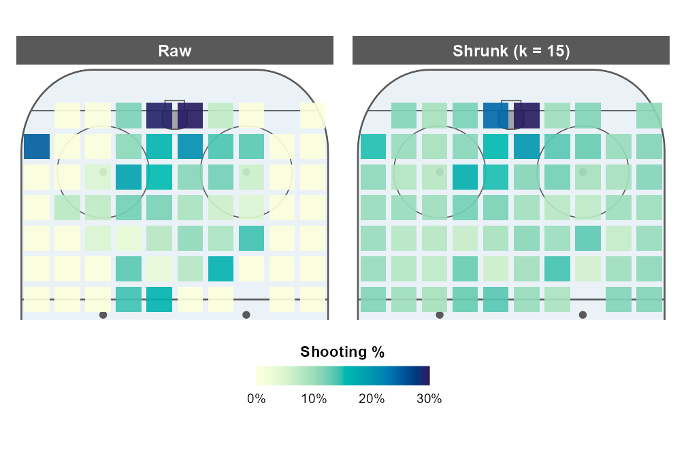
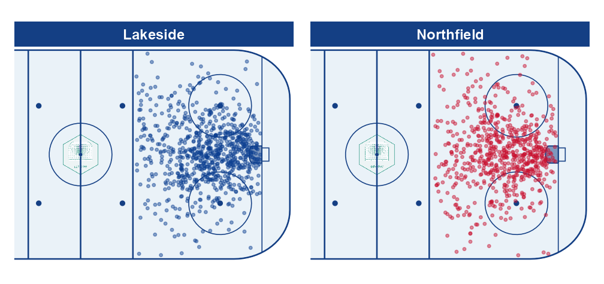

gghockey draws to-scale ice hockey rinks as ggplot2 layers and puts your event data on them. You get:
-
Rinks with IIHF or NHL dimensions (or your own), horizontal or vertical, cropped to any zones, from a single
annotate_rink()call. -
Heatmaps from
geom_rink_bin(): a binned geom whose squares are sized in rink units, so a map looks the same at any export size. Three styles encode the cell value and the event count. - Matching scales, a clean rink theme, team palettes built from your own colours, and optional centre-ice logos.
- The rink as data:
rink_geometry()returns every marking as tidy coordinates, for use outside ggplot2.
Installation
# install.packages("pak")
pak::pak("5plusspieldauer/gghockey")A rink in one line
annotate_rink() adds the markings, a fixed-aspect coordinate system and a theme. Map your data in plain rink coordinates: metres from the bottom-left corner of the boards, x along the length.
library(ggplot2)
library(gghockey)
ggplot(shots, aes(x, y)) +
annotate_rink(details = TRUE) +
geom_point(aes(colour = factor(goal)), alpha = 0.5, size = 1) +
scale_colour_manual(values = c("0" = "grey50", "1" = "#C8102E"),
labels = c("No goal", "Goal"), name = NULL) +
labs(title = "1,500 simulated shots")
The same data works on a vertical rink, cropped to the offensive zone. Pass dimensions = NHL for a North American rink:
library(patchwork)
oz <- ggplot(shots, aes(x, y)) +
annotate_rink(orientation = "vertical", zones = "oz", details = TRUE) +
geom_point(alpha = 0.25, size = 0.8, colour = "#143F84") +
labs(title = "IIHF, offensive zone") +
theme(plot.title = element_text(size = 13))
nhl <- ggplot() +
annotate_rink(dimensions = NHL, colour = "grey25", fill = "white", details = TRUE) +
labs(title = "NHL, full rink") +
theme(plot.title = element_text(size = 13))
oz + nhl + plot_layout(widths = c(1, 2))
Heatmaps
geom_rink_bin() bins events into a square grid and averages z in each cell. Pick the style that fits the story; the matching scales are attached for you.
heatmap <- function(style, ...) {
ggplot(shots, aes(x, y, z = xg)) +
annotate_rink(orientation = "vertical", zones = "oz",
colour = "grey60") +
geom_rink_bin(style = style, binwidth = 2, ...) +
# One shared colour key: fix the limits instead of using each plot's range
scale_fill_rink(name = "Mean xG", limits = c(0.02, 0.25)) +
labs(title = paste0('style = "', style, '"')) +
theme(plot.title = element_text(size = 13, family = "mono"))
}
heatmap("size") + heatmap("fill", gap = 0.15) + heatmap("alpha") +
plot_layout(guides = "collect") +
plot_annotation(theme = theme(legend.position = "bottom"))
In "size", the area of each square is proportional to the number of shots and the colour is the mean xG. Squares are drawn in rink units and never get bigger than one cell, so they can’t overlap.
Your own cell values
rink_bin() returns the grid as a data frame, so you can derive any per-cell value and plot it with precomputed = TRUE. Raw shooting percentages are noisy where there are few shots, so here each cell is pulled towards the overall rate in proportion to how little data it has, i.e. it gets k shots’ worth of the average added:
cells <- rink_bin(shots, x, y, value = goal, binwidth = 3)
avg <- mean(shots$goal)
k <- 15
maps <- rbind(
transform(cells, map = "Raw"),
transform(cells, map = "Shrunk (k = 15)", value = (n * value + k * avg) / (n + k))
)
ggplot(maps, aes(x, y)) +
annotate_rink(orientation = "vertical", zones = "oz", colour = "grey35") +
geom_rink_bin(precomputed = TRUE, style = "fill", binwidth = 3, gap = 0.2) +
scale_fill_rink(name = "Shooting %", palette = rev(hcl.colors(256, "YlGnBu")),
limits = c(0, 0.3), breaks = seq(0, 0.3, 0.1),
labels = scales::label_percent()) +
facet_wrap(~map) +
theme(legend.position = "bottom")
On the right, the lone shots that went in from the boards stop looking like hot spots, and the area in front of the net keeps its high rate because it has the volume to back it up.
Team colours, facets and logos
gghockey ships no team colours or logos (they belong to the teams). Build a palette from your own colours with team_palette(), and put any logo you have the rights to on the ice with logos =.
pal <- team_palette(
team = c("Lakeside", "Northfield"),
primary = c("#0B3D91", "#C8102E")
)
ggplot(shots, aes(x, y, colour = team)) +
annotate_rink(zones = c("nz", "oz"),
logos = list(centre = "man/figures/logo.png"), logo_alpha = 0.7) +
geom_point(alpha = 0.45, size = 0.9, show.legend = FALSE) +
scale_colour_team(pal) +
facet_wrap(~team)
The rink as data
Every marking is available as tidy coordinates, in drawing order:
geo <- rink_geometry(IIHF, details = TRUE)
head(geo[, c("shape", "group", "kind", "x", "y")])
#> shape group kind x y
#> 1 ice 1 polygon 30.000000 0.00000000
#> 2 ice 1 polygon 8.000000 0.00000000
#> 3 ice 1 polygon 7.339365 0.02390855
#> 4 ice 1 polygon 6.683243 0.09547088
#> 5 ice 1 polygon 6.036116 0.21419814
#> 6 ice 1 polygon 5.402404 0.37927931
length(unique(geo$shape))
#> [1] 37Change the dimensions to match your data, e.g. a centre-ice origin:
centred <- rink_dimensions(IIHF, origin_x = -30, origin_y = -15)
range(rink_geometry(centred)$x)
#> [1] -30 30